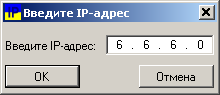

IPInformer v 0.2.0
Краткое описание
Программа предназначена для отображения внешнего IP-адреса компьютера, определения географической принадлежности IP-адреса, а также того, не попадает ли IP-адрес в список "запрещенных" стран.
Программа получает IP-адрес, из поставляемого с ней PHP-скрипта, размещенного на Web-сервере в Интернете, и/или (в текущей версии) с сайтов, которые информируют пользователя о его внешнем IP. В текущей версии не все такие сайты подходят (сайт не должен быть заскриптован, не требовать обязательного использования cookie и не выдавать капчу), а оригинальный скрипт PHP предоставляет некоторые дополнительные возможности.
Далее, программа получает из базы данных SxGeo сведения о геопозиции, и, если настроено и IP-адрес попал в стоп-лист стран, выводит предупреждение о попадании в данный список.
Свежую версию БД SxGeo можно бесплатно скачать с сайта разработчиков базы данных: https://sypexgeo.net/ru/download/
Программа при запуске находится в системном трее, управление производится через контекстное меню.
Изначально писалась по заказу одного активиста, у которого была проблема с периодическим отключением от VPN, в связи с чем, случайно мог "засветиться" его IP, или VPN мог переключить его на нежелательную страну.
По умолчанию программа запускается в "портативном" режиме (все данные хранятся в подкаталоге data каталога с исполняемым файлом)
Системные требования
Microsoft Windows XP и выше (Vista/7/8/8.1/10), .NET Framework 2.0 и выше, 512 Мб оперативной памяти, 15 Мб на жестком диске.
Настройки сети
Настройки сети позволяют указать программе способ соединения: напрямую, используя системные настройки прокси, или же указать настройки прокси вручную. Также можно указать тайм-аут соединения с внешним сервером. Если тайм-аут истечет до получения данных, то программа будет считать, что произошла ошибка сети.
Общие настройки
Сигнализировать об опасности обнаружения стоп-страны:
- Везде - программа включит так называемый "Режим паники", если IP, вне зависимости от источника, относится к стоп-стране из соответствующего списка. О "режиме паники", "режиме предупреждения" и настройке списка стоп-стран см. ниже.
- В REMOTE_ADDR - "режим паники" будет включен, если нежелательный IP обнаружен в заголовке REMOTE_ADDR Web-сервера, в остальных случаях будет выдано предупреждение.
- В заголовках HTTP - "режим паники" будет включен, если нежелательный IP обнаружен в заголовках HTTP Web-сервера, если нежелательный IP только в REMOTE_ADDR, будет выдано предупреждение. Полезно при работе с не-анонимными прокси.
Опции В REMOTE_ADDR и В заголовках HTTP работают только в связке с поставляемым с программой скриптом PHP. Для остальных сайтов и скриптов эти опции будут работать так же, как вариант Везде
- Только предупреждение - программа будет выдавать только предупреждение
- Не сигнализировать вообще - программа будет просто отслеживать и отображать текущий IP, игнорируя список стоп-стран, как будто бы он не заполнен.
Опрашивать скрипт через каждые:
- минут
- секунд
Скрипт будет опрашиваться через определенный интервал времени, указанный в соответствующем текстовом поле. Переключателями, соответственно, меняются единицы времени, минуты или секунды.
При сбое сети показывать:
- Окно с сообщением: В случае сбоя в сети на экран будет выведено диалоговое окно с кратким описанием сбоя и возможностью остановить отслеживание на время устранения сбоя.
- Всплывающую подсказку: будет выведена всплывающая подсказка в трее.
Настройки скриптов получения IP:
- Использовать только первый в списке: программа всегда будет использовать только один скрипт, являющийся первым в списке.
- При ошибке задействовать следующий: если произойдет ошибка сети, web-сервера или самого скрипта, программа попытается получить IP у следующего сервера.
При нажатии на кнопку Список скриптов для получения IP-адреса выводится окошко со списком скриптов, а также элементами управления, позволяющими добавить, удалить, отредактировать скрипт, или поменять его позицию в списке.
Внимание! Если этот список будет пуст, программа не запустится, выдав следующее сообщение:
Звуковое оповещение:
Если соответствующий чекбокс установлен, при обнаружения нежелательной страны, программа проиграет звук, либо встроенный, либо выбранный пользователем (Открыть файл).
Звук должен быть в формате WAV. Прослушать можно с помощью кнопки
Выполнить программу:
В этом поле можно указать программу (команду, BAT/CMD-файл), которая будет выполнена в случае обнаружения стоп-страны в режиме паники.
Спрашивать при выходе:
Если чекбокс установлен, при выходе из программы (пункт Выход в контекстном меню), будет запрошено соответствующее подтверждение:
Оповещать о смене IP:
Если чекбокс установлен, при смене IP-адреса в трее возникнет всплывающая подсказка:
Список стоп-стран:
При нажатии на эту кнопку откроется окно для редактирования списка стоп-стран. Слева будет расположен справочник стран и их ISO-кодов, справа сам список. Вверху есть поле, позволяющее искать конкретную страну по названию или коду в справочнике. Страна добавляется в список по нажатию кнопки , удаляется кнопкой . Справочник стран берется из файла iso.csv в каталоге с настройками программы, если файл отсутствует - используется внутренний справочник.
Добавить в автозагрузку:
Программа добавит свой ярлык в папку Автозагрузка в меню Пуск текущего пользователя.
Обновить БД SxGeo:
При нажатии на эту кнопку, пользователю будет предложено выбрать каталог, содержащий файлы SxGeo.dat и/или SxGeoCity.dat. Чтобы обновить БД SxGeo скачайте архивы с новыми версиями баз данных с сайта https://sypexgeo.net/ru/download/, распакуйте их в отдельный каталог, и укажите каталог программе.
Сброс настроек:
Настройки сети и программы сбрасываются к значениям по умолчанию.
Режим предупреждения
В режиме предупреждения, если обнаруженный IP принадлежит к одной из стоп-стран из списка, программа меняет цвет значка, выводит всплывающую подсказку в трее и проигрывает звук, если данная опция установлена.
Режим паники
В режиме паники происходит все то же, что и в режиме предупреждения, но дополнительно сообщение выводится в отдельном окне, а также программа выполняет внешнюю команду, указанную в общих настройках, если соответствующее поле заполнено.
Другие пункты меню
- Обновить
Обновляет информацию об IP-адресе.
- Мой IP...
Отображает окно с подробной информацией об IP-адресе:

- Другой IP...
Выводит диалоговое окно, имеющее поле для ввода IP-адреса. После ввода отображается подробная информация о введенном IP.

- Остановить/Возобновить
Временно останавливает или возобновляет отслеживание IP.
- Техническая информация...
Выводит информацию о текущем скрипте и БД SxGeo
- Помощь
Эта справка.
- О программе...
Окно с информацией о версии и разработчиках.
- Выход
Выход из программы
Параметры командной строки
/? /h /help -help --help -h - эта справка
/delcfg - очистка конфигурации. При запуске программа создаст конфигурацию по умолчанию
/np - отключение "портативного" режима. Данные и конфигурация будут храниться в каталоге C:\Users\<пользователь>\AppData\Local\IPInformer2\
Дополнительные компоненты
В качестве контрола для ввода IP-адреса мы использовали
C# IP Address Control вот этого автора:
https://www.codeproject.com/Articles/9352/A-C-IP-Address-Control
База данных SypexGeo (SxGeo):
© 2006-2018 zapimir
© 2006-2018 BINOVATOR
https://sypexgeo.net
История версий
0.0.1 b, 19/01/2010 - Первая версия, написанная для товарища OPPosition
0.1.2 08/08/2018 - Исправлен код запросов и конфигов, многое переделано
0.2.0 01/07/2019 - Программа "отвязана" от скрипта с SxGeo на сервере, интерфейс к БД SxGeo перенесен внутрь программы, запросы к БД обрабатываются локально, добавлена поддержка других источников IP-адресов. Первая публичная версия.
Разработчики
Код
D. Larin
Chang Min Ho
PunkArr[]
Leha Silent
NKT
Форточки
D. Larin
PunkArr[]
Тестирование
D. Larin
OPPosition
PunkArr[]
Дополнительно